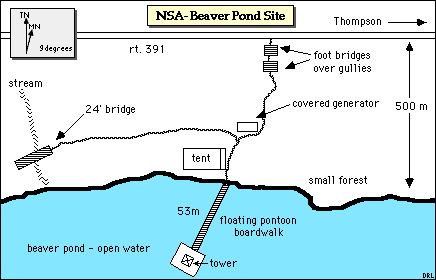
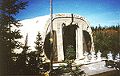
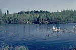
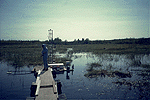
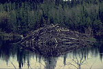
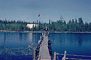

The Northern Study Area (NSA) Beaver Pond site was mainly a TGB site for monitoring gas intake and output from a standard pond. It had a small flux tower located on a floating platform in the middle of a beaver pond.
 Location of the NSA within Canada. |
 Location of the Beaver Pond site within the NSA. |
|  Map of the Northern Study Area Beaver Pond site. | |
| NSA Beaver Pond Flux Tower also called NSA-BVP-FLXTR (click here for detailed info) |
||
| Latitude: 55.84225 | UTM Easting: 560900.6 | BOREAS X: 806.893 |
| Longitude: -98.02747 | UTM Northing: 6188950.7 | BOREAS Y: 614.537 |
| Elevation (ASL): 186.74 m | UTM Zone: 14 | |
|  The storage tent and gas collectors |  The TGB gas collectors on the beaver pond |
|  The bridge and the 3 meter flux tower |  The beaver lodge |
|  The bridge from the flux tower This is the floating bridge leading from the flux tower back to the shore. The large tent for holding equipment is clearly visible on the shore. | |
Related Pages:
 BOREAS Home
BOREAS Home
 Study Region Overview
Study Region Overview
 Northern Study Area (NSA)
Northern Study Area (NSA)
 NSA Beaver Pond Site (NSA-BP)
NSA Beaver Pond Site (NSA-BP)
Revison Date: January 25, 1999
{kind=link}
{kind=link}
{kind=link}
{kind=link}
{kind=link}